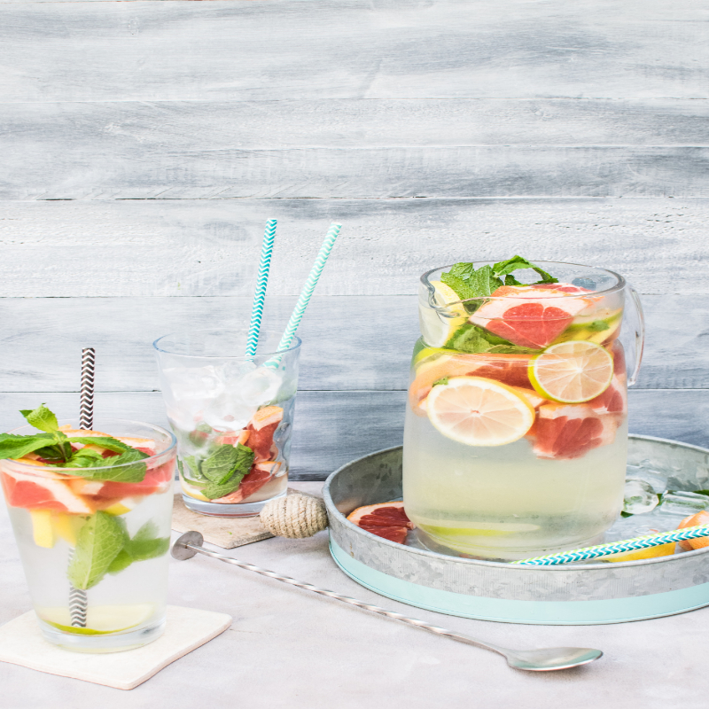

Dinner
>
Meals
>
Ingredients
>
Occassions
>
Cuisines
>
Kitchen Tips
>
News
>
Features
>
About Us
>
Hungry? Get recipes
Popular Collections
Seafood
Breakfast
Dinner
Salads
View All Collections
Easy & Quick Recipes
198
10-minute couscous salad
29
Vegetarian ramen
26
Quick chicken hummus bowl
131
Speedy sausage stroganoff tagliatelle
0
Microwave prawn laksa noodle soup
43
Quick & spicy nasi goreng
212
Easy teriyaki chicken
133
Fastest ever lemon pudding
153
Pork noodle stir-fry
95
Quick prawn, coconut & tomato curry
55
Instant frozen berry yogurt
78
Quick fried rice
View More
News
The Best Cookbooks To Buy In 2023
This dinner recipe will blow your mind
50 restaurants you have to visit in your lifetime

7 easy cocktail recipes to impress your friends
More News